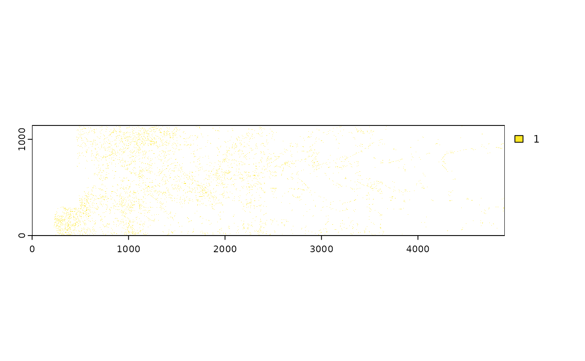

This function estimates root diameters from an input image using skeletonization and distance transform methods. The input can be a file path, raster, image object, or array, which is converted to a binary image before processing.
Arguments
- img
A character string (file path), `SpatRaster`, `RasterBrick`, `RasterLayer`, `cimg`, `magick-image`, or array. The input image to process.
- diagnostics
Logical. If `TRUE`, enables diagnostic plots and logging. Default is `FALSE`.
- skeleton_method
Character. The method to use for skeletonization. Default is `"Guo-Hall"`.
- select.layer
Integer. Specifies which layer to use if the input is a multi-band image. Default is `2`.
Value
A list containing:
- quantiles
Numeric vector of diameter quantiles (10th to 100th percentile).
- mean_diameter
Numeric. The mean root diameter.
- median_diameter
Numeric. The median root diameter.
- diameters
Numeric vector of all diameter values in the skeletonized regions.
- skeleton_rast
`SpatRaster`. Binary raster mask of skeletonized regions.
- diameter_rast
`SpatRaster`. Raster showing diameters in the skeletonized regions.
- distance_map_rast
`SpatRaster`. Raster showing the distance transform values.
Details
The function works as follows: - Converts the input image to a binary format (`cimg`). - Applies a distance transform to compute the Euclidean distance for the foreground (root) pixels. - Skeletonizes the binary image to identify root centerlines. - Filters distance values to retain only those corresponding to the skeletonized regions. - Computes diameter statistics, including quantiles, mean, and median diameters.
The function supports various input formats and normalizes image values to the range [0, 1] if needed. It uses the `terra` package for raster operations and the `imager` package for image processing.
Examples
# Example usage:
data(seg_Oulanka2023_Session01_T067)
result <- root_diameter(
img = seg_Oulanka2023_Session01_T067,
skeleton_method = "GuoHall", select.layer = 2,
diagnostics = TRUE)
#>
#> Applying method: GuoHall
#> Image dimensions: 1144 x 4900
#> Initial foreground pixels: 200781
#> Processing complete. Summary statistics:
#> Mean diameter: 2.14
#> Median diameter: 2.00
#> Number of valid measurements: 7624
# Access results:
print(result$mean_diameter)
#> [1] 2.142038
terra::plot(result$skeleton_rast)
